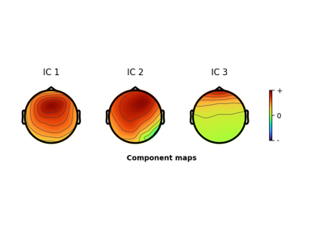
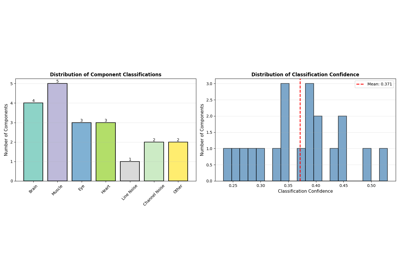
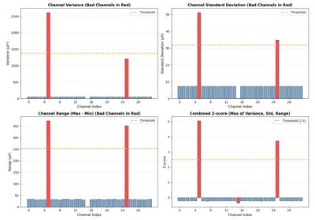

Examples#
Runnable scripts covering common EEGPrep workflows. Each one executes during the documentation build, so the figure on every card is that example’s real output. Select a card to see the code, the plots, and a download link.


Preprocess Data: Filtering, Re-referencing, Resampling
Preprocess Data: Filtering, Re-referencing, Resampling


Plot data: ERPs, ERP-images, spectra, time-frequency, ICA components
Plot data: ERPs, ERP-images, spectra, time-frequency, ICA components


Reject Artifacts: Channels, Data, ASR, and ICA
Reject Artifacts: Channels, Data, ASR, and ICA


ICA Decomposition and ICLabel Classification
ICA Decomposition and ICLabel Classification

Channel Interpolation for Bad Channel Recovery
Channel Interpolation for Bad Channel Recovery